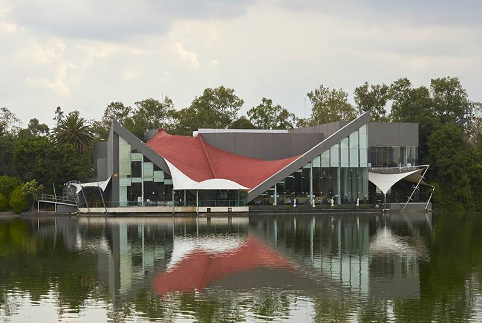

<div class="banner flex__center">
    
    <p class="text__banner">El Restaurante La buena vida, en el corazón del Bosque de Chapultepec, inició su trayectoria en 1964. <br>
        Desde entonces, más de 50 años han transcurrido en la vida del restaurante, formando parte en innumerables ocasiones de la vida de capitalinos y visitantes. <br>
        Un lugar icónico El Bosque de Chapultepec, con una superficie equivalente dos veces a la de Central Park, es el entorno privilegiado para la ubicación del Restaurante El Lago. <br>
        Se distingue por su arquitectura, diseñada por el Arquitecto Félix Candela, famoso por la creación de estructuras basadas en el uso extensivo del paraboloide hiperbólico.</p>
</div>